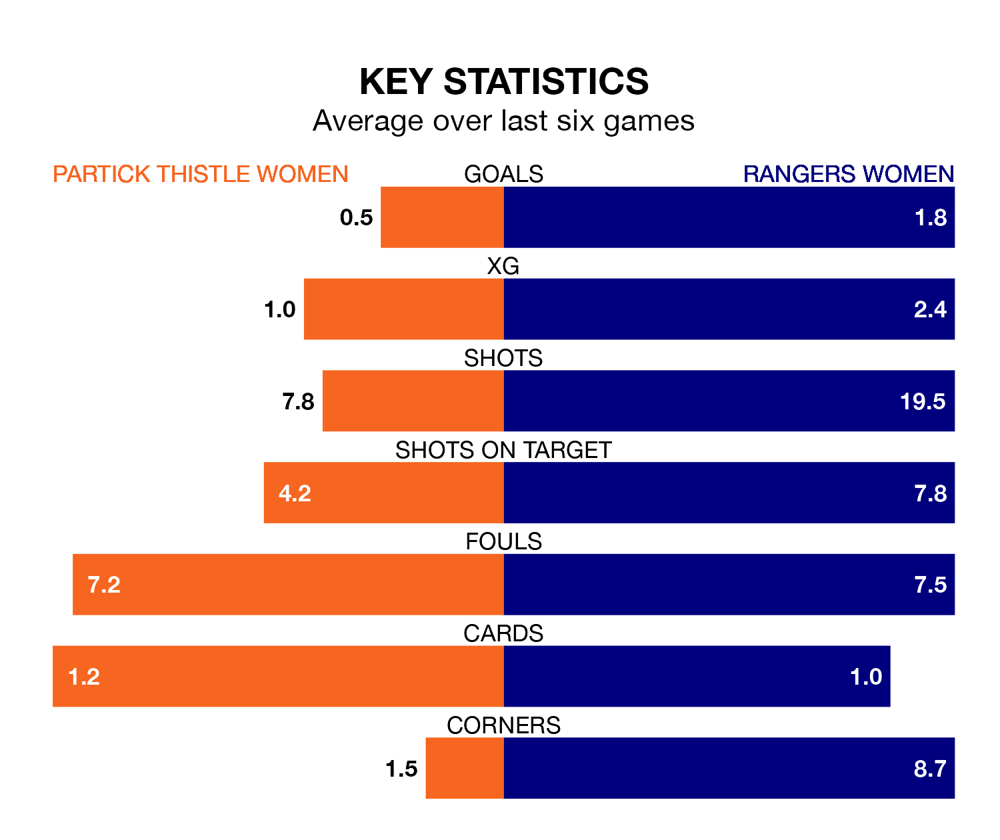

Rangers Women travel to Petershill Park for Sunday lunchtime's match against Partick Thistle Women looking to bounce back from defeat last time out in SWPL 1.
Rangers, who sit second in the league after 26 games, fell to a 1-0 away defeat to Hearts Women on Wednesday.
They face a Partick Thistle side who also lost their last match, a 4-1 defeat to Glasgow City Women, and who sit sixth in the table.
Partick Thistle are in terrible form in SWPL 1, with no wins and a draw from their last six games.
With three wins and a draw over that period, Rangers's form is much better – they have taken 10 points from 18, compared to Thistle's one.
With 99 goals in 26 games so far this season, the away team are the league's second-highest scorers with 3.8 goals per game. And they are conceding fewer than average, letting in 15 goals at a rate of 0.6 per game.
The hosts, meanwhile, are below average scorers, with 1.4 goals per game, compared to a league average of 2.1. They have conceded 1.9 goals per game.
With Jenna Fife between the sticks, Rangers can rely on one of the league's safest pair of hands. She has kept 10 clean sheets in her 22 appearances this season, and no 'keeper has prevented the opposition scoring more often in SWPL 1.
In Partick Thistle's net, Ava Easdon has six clean sheets in 11 games. She has conceded a goal every 70 minutes, more than twice as often as the 152 minutes between goals for Fife.
In the last 10 years, Partick Thistle and Rangers have played each other on 10 occasions. Rangers won nine of them and they drew once.
On average, Thistle scored 0.3 goals and Rangers 3.8 in those matches.
Their last meeting was on March 24, when Rangers won 4-1 at home.
Updated: 15:40 (UTC), 18/04/24